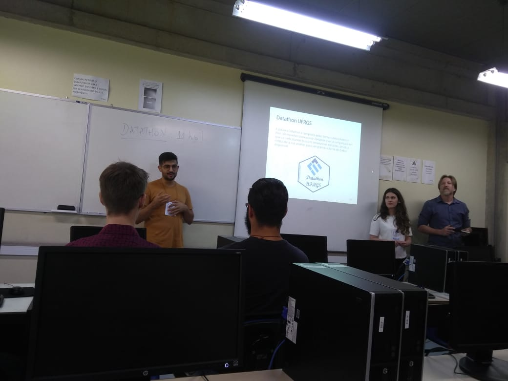
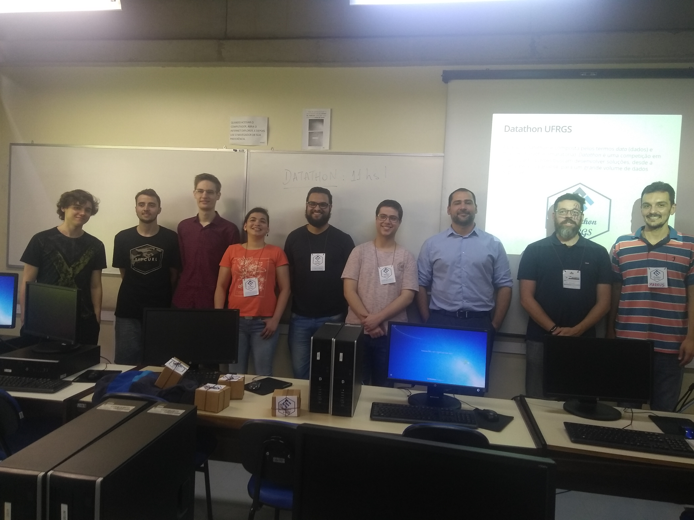
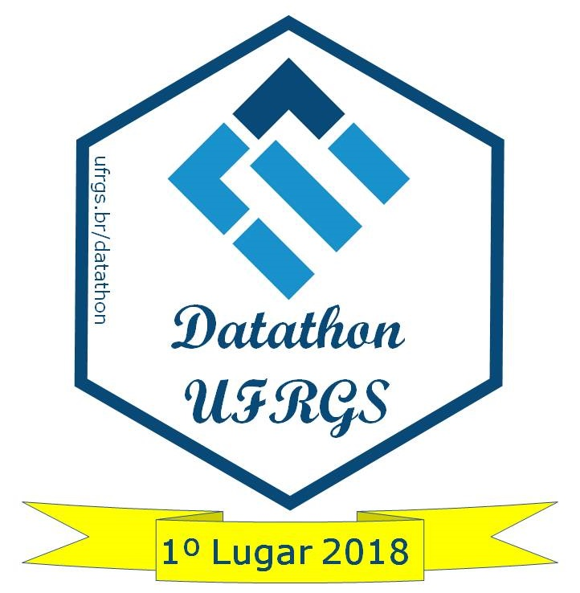
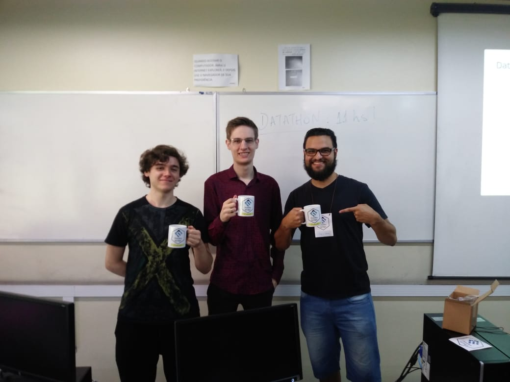

Resultados 2018
A maratona
O 1º Datathon da UFRGS contou com a participação de estudantes de graduação e pós graduação da matemática, estatística e ciência da computação, divididos em quatro equipes.
O primeiro dia iniciou com o minicurso “Pintando e bordando no R: ggplot2 e Rmarkdown” apresentado pelo Prof. Rodrigo C. P. dos Reis. Após o minicurso, então, o desafio foi lançado. As equipes foram formadas e dentro do prazo estipulado foram apresentadas as propostas de análises.
Ainda no primeiro dia do evento tivemos o segundo minicurso, intitulado “Web Scrapping, Web Services e API’s - Extraindo dados através do R”, ministrado por Lucas Godoy (Ex-aluno Estatística/UFRGS, Campeão Datathon CEPESP-FGV).
O segundo dia iniciou com uma breve discussão sobre o andamento das análises. Ocorreu também a terceira oficina, ministrada via skype por Luís Gustavo Silva e Silva (Pós doutorado pela UFMG), título “MapeaR: descomplicando a construção de mapas no R”. Por fim as equipes receberam instruções sobre o pitch de apresentação das soluções.
Resultados
O encerramento do 1º Datathon da UFRGS ocorreu com as apresentações dos produtos finais e divulgação do resultado. A primeira equipe a apresentar foi “Mitos e Verdades”, seguida pela equipe “What If”. As demais equipes relataram problemas na fase final das análises e optaram por não apresentarem seus resultados.
 
A banca avaliadora foi composta pelo Prof. Rodrigo Dalla Vechia (Departamento de Matemática Pura e Aplicada UFRGS), Profa. Márcia Barbian, Lucas Godoy e Miriam Salinas(Pós graduação em Computação Aplicada na Engenharia de Software UTFPR). De um modo geral, a avaliação exaltou a boa qualidade dos produtos apresentados apesar do curto prazo para a realização e parabenizaram a todos os participantes.
1º lugar - Equipe “What If”
 
Com o título da proposta “Receitas e Despesas dos partidos políticos”, a equipe “What If” foi a campeã do 1º Datathon da UFRGS. Seus integrantes Bruna Martini Dalmoro, Cristiano Sulzbach, Guilherme Malta e Pedro Victor de Medeiros fizeram um ótimo trabalho, confira aqui os slides da apresentação do grupo.
“O aplicativo tem como objetivo facilitar a visualização dos dados de Receita e Despesas dos candidatos e partidos concorrentes nas Eleições do ano 2014. Simplificando também a pesquisa por um candidato ou partido específico. Uns dos gráficos principais representa a relação receita vs vitória e amostra que candidatos que gastaram mais em campanhas politicas tiveram mais chances de vitória.” (https://medium.com/@michinoguera/explorando-a-1º-datathon-ufrgs-2fabd5621f0d)
O endereço para o aplicativo é https://sulzbach.shinyapps.io/datathon/ (Usuario ‘datathon’ e Senha ‘datathon’). Well done ‘What If team’! You guys made it!
2º lugar - Equipe “Mitos e Verdades”
A equipe “Mitos e Verdades” também está de parabéns pelo belo trabalho apresentado. A equipe composta por Gabriel Holmer Saul, Gustavo Utpott e Priscilla Gnewuch apresentou a proposta “Uma análise do 1º turno das eleições presidenciais”. Seus resultados podem ser encontrados aqui.
“Os gráficos em mapas divididos por estados representaram especificamente os votos para os candidatos a presidência concorrentes para o segundo turno e permitiram ver que a maioria das pessoas com maior nível de escolaridade votaram pelo candidato Jair Bolsonaro, enquanto o nível de escolaridade dos votantes do candidato Haddad foi heterogêneo ressaltando uma maioria de pessoas com escolaridade baixa.” (https://medium.com/@michinoguera/explorando-a-1º-datathon-ufrgs-2fabd5621f0d)
Agradecimentos
Gostaríamos de agradecer novamente a todos os participantes. Nosso muito obrigado também a banca avaliadora. A participação e colaboração de todos vocês fizeram desse evento um grande sucesso!
Também agradecemos o apoio: * Instituto de matemática e Estatística - IME;
* Departamento de Estatística - DEst;
* Semanística;
* INOVA UFRGS ;
* Imprensa da UFRGS.
Aguardem! Novas atividades estão por vir!

Esta obra está licenciada com uma Licença Creative Commons Atribuição-NãoComercial-CompartilhaIgual 4.0 Internacional.